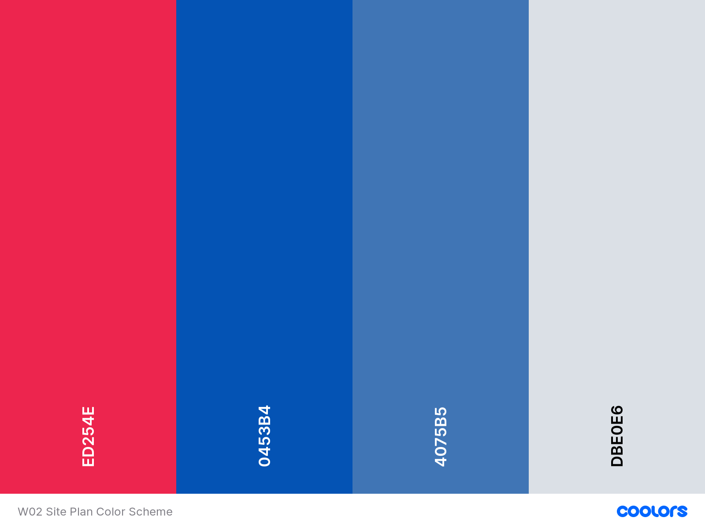

Site Name
The Rapids River Rafting Services - Your Guide to having the best-ever rafting experience
Site Purpose and Goals
The purpose of the website is to help people access detailed information about the services provided by the company, the prices of each category of service, and convince them to choose the company.
Target Audience
The target audience would be- High schoolers High schoolers would be able to book tickets for groups in batches of 4 upwards, and have a specialist's supervision all through.
- College students and graduates College students and graduates would be able to book individually and for groups.
- The business class The business class would have options of 'simple rafting' services, and 'business themed rafting' services.
- Explorers Similar to business class, but with exciting option of an 'explorer's rafting service.'
The Logo
The logo to be used would be the image below.
If there are other suggestions, it will be made known.
Color Scheme
For the color scheme, we would be having a blend of blue and red.
Typography to be Used
The primary text fonts will be Century, Calisto MT and Cambria.- Site header Calisto 40px
- Primary Navigation Calisto 30px
- Footer Navigation Calisto 20px
- Header 1 (h1) Century 30px
- Header 2 (h2) Century 25px
- Header 3 (h3) Century 20px
- Paragraph text Cambria 16px